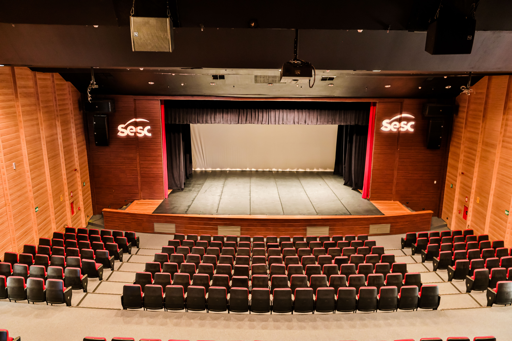

Teatro Newton Rossi
Localização: Ceilândia - DF

Cultura e apresentações
O Teatro Newton Rossi, na unidade do Sesc em Ceilândia, recebe apresentações e atividades culturais abertas à comunidade.

O Teatro Newton Rossi, na unidade do Sesc em Ceilândia, recebe apresentações e atividades culturais abertas à comunidade.